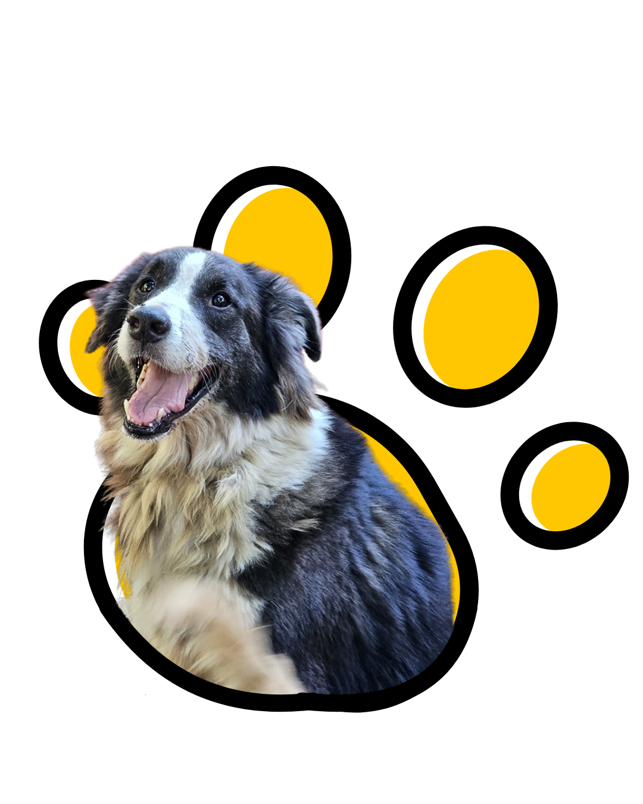
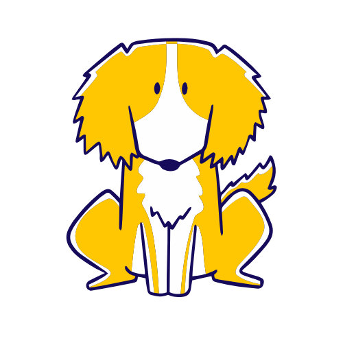
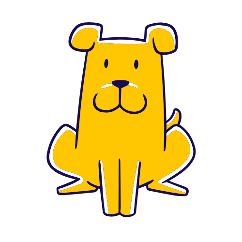
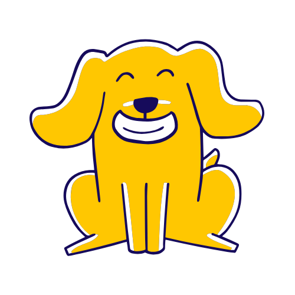
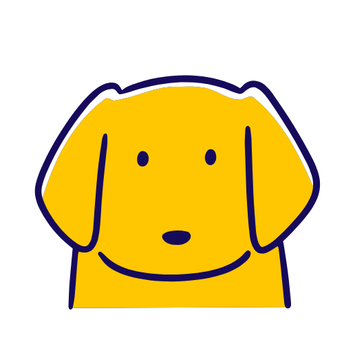

Más información
Donar
Voluntariado
Adoptar

¡Aquí el amor tiene cuatro patas!
En Mi Jardín de Peludos, cada vida cuenta. Únete a nosotros y marca la diferencia: cada perrito merece amor, refugio y una segunda oportunidad.
Haz una donación
Más de 240 perros rescatados
con los objetivos de

Reducir el
abandono
abandono
Rescatamos perritas embarazadas para reducir el abandono en las calles.

Brindar segundas oportunidades
Cada perrito merece un hogar lleno de amor y cuidados, y trabajamos para dárselo.

Ofrecer atención
y cariño
y cariño
Nos dedicamos a su bienestar, proporcionándoles atención médica y emocional.
Inspirar un cambio
Con tu apoyo, podemos seguir haciendo una diferencia y promover el amor y respeto hacia todos los animales.

¡Cambia una vida, dona y visítanos en Mi Jardín de Peludos!
En Mi Jardín de Peludos, transformamos abandono en esperanza y dolor en amor.
Tu apoyo no solo alimenta, abriga y cuida, también regala segundas oportunidades.
Visítanos y vive la magia del amor incondicional.
Tu apoyo no solo alimenta, abriga y cuida, también regala segundas oportunidades.
Visítanos y vive la magia del amor incondicional.
¡Agenda tu visita!

Días de visita:
Martes, jueves, sábado y domingo
Horario: De 10 a.m. a 2 p.m.
Martes, jueves, sábado y domingo
Horario: De 10 a.m. a 2 p.m.
Por favor, agenda tu visita al menos 2 días
Mi jardin de peludos
Dirección
Contacto
Refugio y rescate de perros en El Salvador
info@mijardindepeludossv.com
Urbanizacion San Francisco 2,lote #4,Calle a, Zapotitan 1504
(503) 7396-1857
voluntariado@mijardindepeludossv.com
©
Copyright 2025 - Mi jardin de peludos, todos los derechos reservados